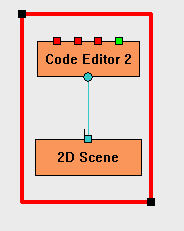
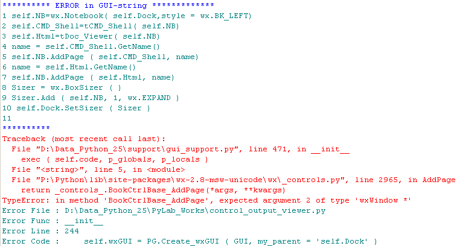

Grouping  (december 2008)
(december 2008)
Application Designer / Domain Expert / Control Designer / Core Developer
|
Grouping By double-clicking on the canvas, a rubberband rectangle will be toggled. This rubberband can be used to group a number of individual Bricks into a new Brick, The new Brick will contain all connections that are available between the bricks in the selection. After the selection is made, the grouping is activated through the RM-menu. |
 |
In control_output_viewer.py an attempt is done, to merge 2 controls tCMD_Shell_Doc = tCMD_Shell + tDoc_Viewer.
There are some problems to overwin :
